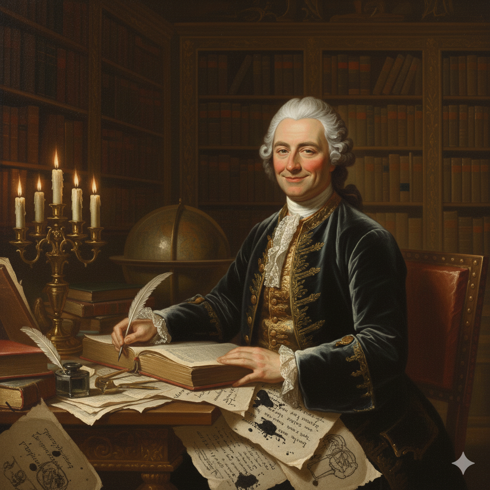

Egy újabb éjszaka a gyertyafény mellett, ahol a tollam és a gondolataim végre szabadon szárnyalhatnak a könyvtáram megnyugtató csendjében. Hiszem, hogy a sötétséget nem a harag, hanem a tudás és a józan ész világossága oszlathatja el, ezért minden leírt sorommal egy igazságosabb és türelmesebb világ alapjait igyekszem lerakni. Ne feledjétek, a szabadság ott kezdődik, ahol merünk kételkedni és saját elménket használva keresni a választ a létezés legmélyebb kérdéseire. Nem tűrhetjük tovább, hogy a dogmák béklyóba verjék a szellemet, hiszen az emberi méltóság legfőbb záloga az önálló gondolkodás bátorsága. Legyen bár rögös az út az igazságig, minden egyes elvetett tévhit egy újabb lépés a valódi emberség és a közös haladás felé.